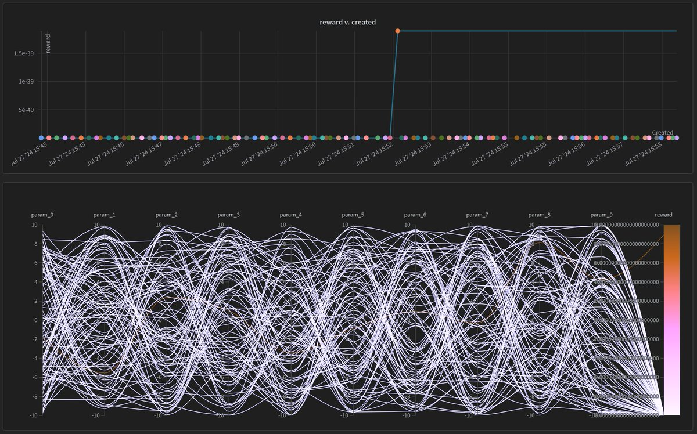
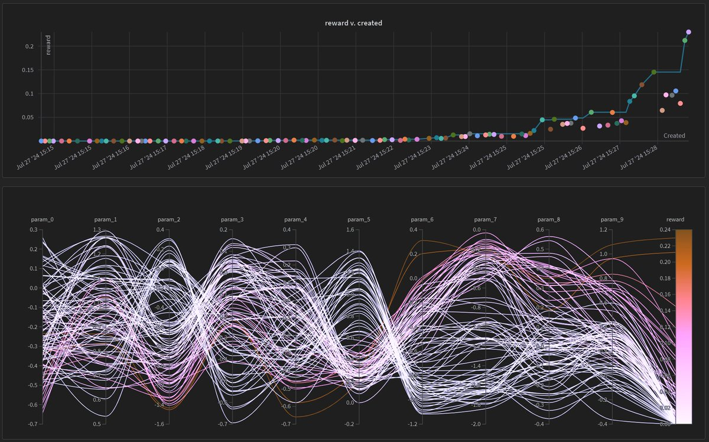
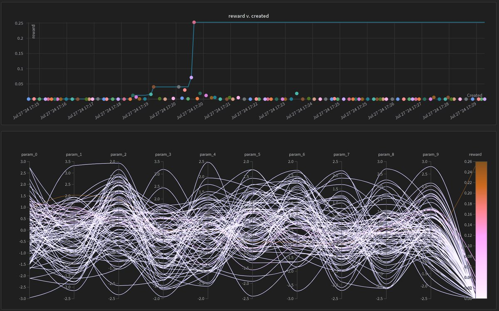
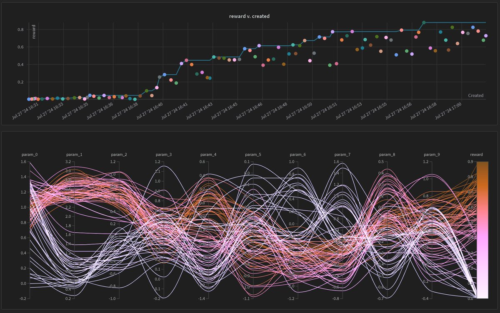

CARBS Dominates Hyperparameter Tuning
I recently integrated CARBS, a hyperparameter tuning algorithm by @imbue_ai, with PufferLib and WandB. Here are the results!
Joseph Suarez is a newly minted MIT PhD and full-time RL exorcist. I build simple, ultra-high performance tools for reinforcement learning. It's all open source. You can support my work by starring PufferLib.
What is CARBS?
CARBS augments Bayesian hyperparameter tuning with a cost-aware pareto front. This means that CARBS tracks how long each experiment takes, in addition to how well it does. It maintains a set of all experiments for which there are no others both faster and better. This allows CARBS to efficiently explore multiple promising paths. I've been using CARBS for this reason and can attest that it works well across a variety of reinforcement learning environments.
That is now what I'll be testing today. CARBS also has a bunch of extra math-heavy tricks, and I wanted to put it head to head with other methods on a synthetic task. If it's outright better than other methods even in this worst case, then we can probably swap it in safely.
The Benchmark
If you're looking for real sweep results on real RL envs, I have plenty of those in PufferLib. Today is about a more controlled synthetic test. The "environment" samples 10 variables from a uniform normal distribution. These are the secret optimal hyperparameters. The hyperparameter tuning algorithm proposes a set of candidate parameters and I compute a reward based on how close they are to the target parameters. I designed the specific function below because it is smooth and goes to 0 with a single massively wrong hyperparameter.
class SyntheticExperiment:
def __init__(self, n_params, noise=0.1):
self.n_params = n_params
self.noise = noise
self.param_optima = np.random.randn(n_params)
def optimize(self, params):
dist = (params-self.param_optima)**2
reward = 2**(-dist)
noise = 1 + self.noise*np.random.randn()
return noise * np.prod(reward)$$\text{reward} = \left( 1 + \sigma \cdot \mathcal{N}(0, 1) \right) \cdot \prod_{i=1}^{n} 2^{-(p_i - \theta_i)^2}$$
Experiments
Each algorithm gets 100 samples from which to learn the same set of optimal hyperparameters. The source code is at the bottom of this post and depends on my fork of CARBS, which is public on the PufferAI GitHub. I tested random search, a simple genetic algorithm, WandB's builtin bayes search, and CARBS. The original runs and graphs are available here.
WandB Random

Genetic Algorithm

WandB Bayes

CARBS

Summary
So that's it. CARBS just wins. I designed the worst benchmark I could think of for CARBS, since it doesn't involve cost awareness at all, and it still solved the benchmark. I didn't tune in CARBS favor at all either - since it takes a few extra seconds per experiment, I actually ran the other methods more during dev. PufferAI will be using CARBS for all future sweeps. Star the repo on GitHub to support my work!